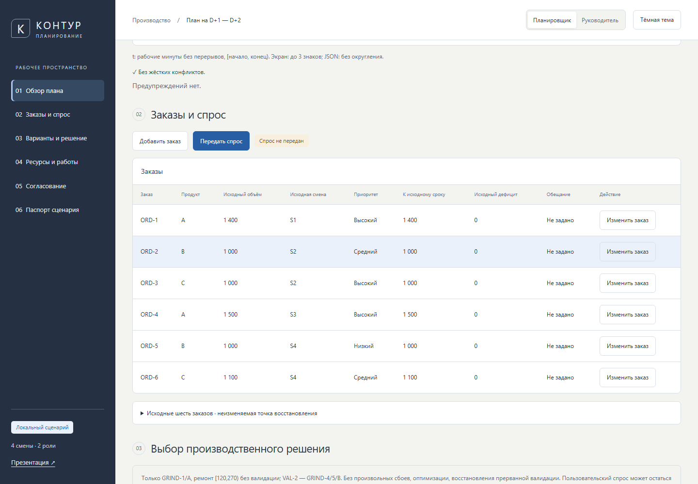
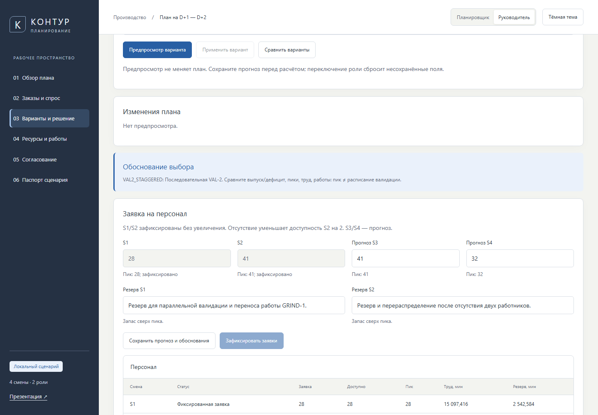
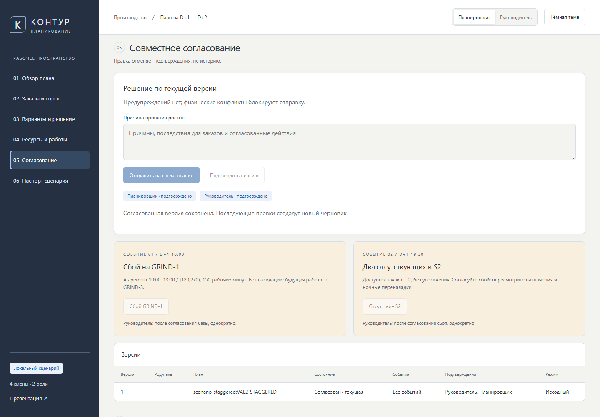
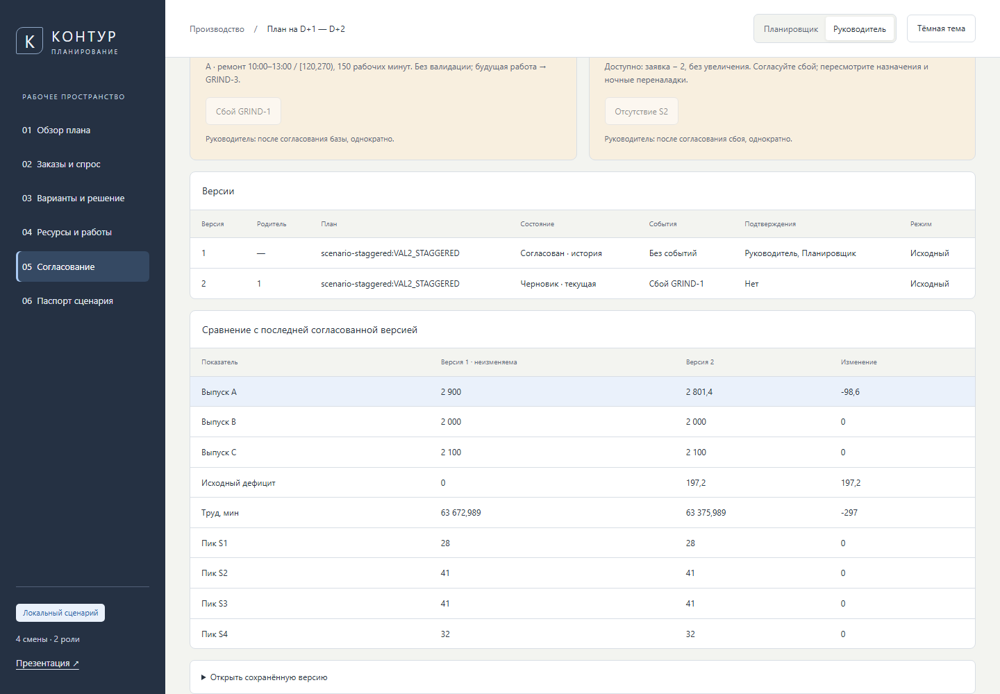
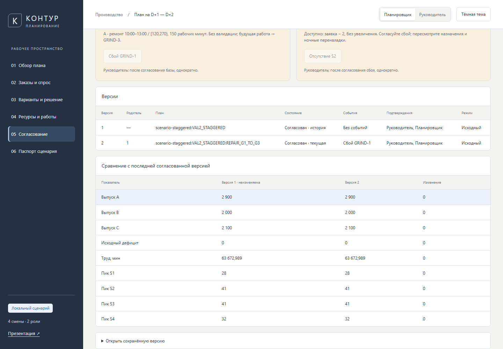
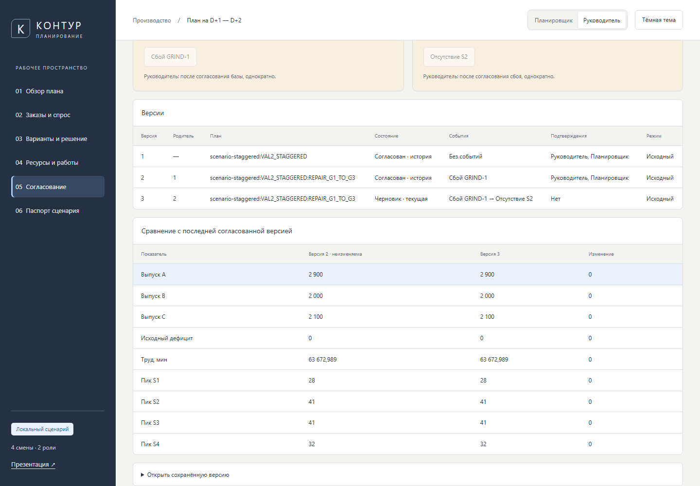
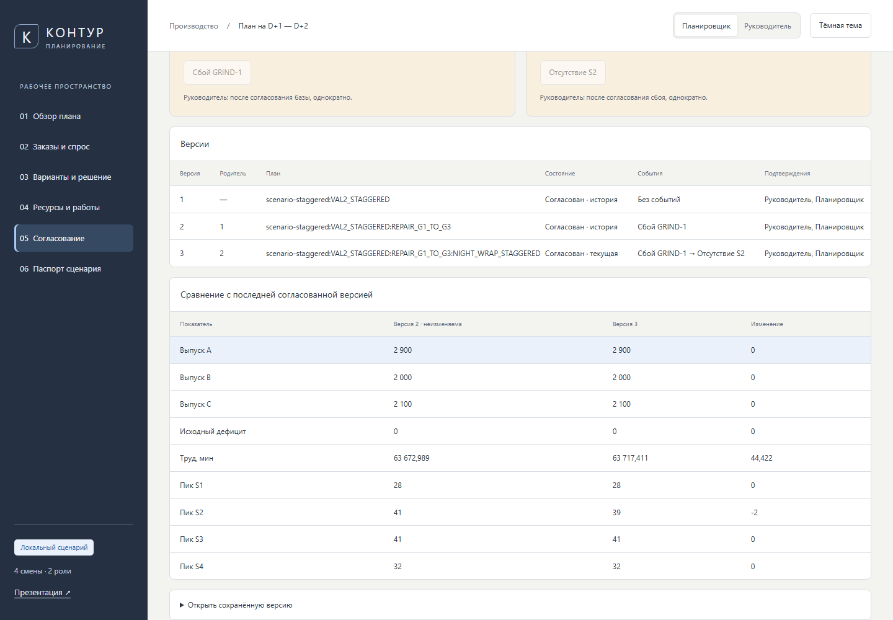
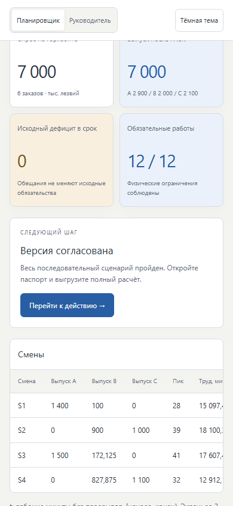

Реальные шаги учебной симуляции Кандидат 62c762135fbceec418bc459c9f73ab28a4c42b86042833e7cae1919d36f7b0e1. Это выполненные взаимодействия, не макеты и не фабричные наблюдения. Для каждого кадра публичный JSON интерфейса совпал с соответствующим отчётом и workflow публичных API.
Паспорт 
01 · Планировщик: исходный спрос, до передачи и фиксации заявок · версия 1 · planner · 1440 px 
02 · Руководитель: рассчитанный выбор и зафиксированные заявки · версия 1 · manager · 1440 px 
03 · Базовая версия согласована обеими ролями · версия 1 · planner · 1440 px 
04 · Сбой GRIND-1: последствия до переноса работы · версия 2 · manager · 1440 px 
05 · Перенос после ремонта: согласованный преемник · версия 2 · planner · 1440 px 
06 · Отсутствие двух работников S2: до адаптации, не достигнутый физический результат при ошибках персонала · версия 3 · manager · 1440 px 
07 · Итоговая адаптация согласована обеими ролями · версия 3 · planner · 1440 px 
08 · Мобильный итог 390 px: та же реально согласованная версия · версия 3 · planner · 390 px